branch prototype/3d-animation-pipeline · control baseline/outfield-runtime-v1 (23b7af4, untouched) · local only, nothing pushed
http://127.0.0.1:8124/sandbox/visual/match.html?ofPlay=1&fps=60&squad=7| capability | already owned by the simulation | added in V1 |
|---|---|---|
| pass families | world.py FAM: SHORT / DRIVEN / THROUGH / CUTBACK (arrival-speed solved), LOFT / CROSS aerial | THROUGH, CUTBACK ported into the JS harness ptFam (it silently fell back to the SHOT law) |
| pass target | continuous.py: receiver + velocity × lead | receiver chosen in the direction you ask (±75°), same lead; through ball = 6 m past him |
| technique / foot | ptTech, ptSelectFoot (world.py select_kick_foot), trivela rule | reused unchanged |
| contact instant | KICK_LIB recovered rhythm → kickAt | aimed passes take it from the technique, not from sprite art coverage for the screen direction |
| kick wind-up | world.py KICK intent approaches the ball (1.8 m/s); JS harness only braked | aimed passes approach the spot behind the ball on the target line, keeping pace with a rolling ball; facing turns to the target |
| reception outcome | world.py interact() + continuous.py touch_model (CLEAN / HEAVY / LOOSE / DEFLECT, cushion push) | ported with a neutral reference profile and no noise draw (the JS harness used the no-brain fallback, under which an ordinary 6.5 m/s pass was always LOOSE) |
| reception timing / foot | anywhere within 0.9 m of the player's centre | realised at a boot: sub-tick sweep of the ball against both boots; comfortable point in front of the boot or a stretch at the leg's reach; out of reach = not received |
| several players | — (the harness had one player) | squad play: the same per-player law on each player's own context, then keeper, then ball |
| kind | what decides it (simulation) | what the body does |
|---|---|---|
| CUSHION | no direction held; ball kept a step in front along the facing (world.py) | foot fully turned out, stays with the ball, set down |
| DIRECTIONAL | a direction held as the ball arrives > 35° from facing: the push goes that way | same meet; the boot follows the ball out, the body turns with the facing |
| RUNNING TAKE | receiver ≥ 2.5 m/s at contact; push = his velocity × 0.7 + 1.1 m/s | foot half turned out, the stride carries on |
| V1 pass | simulation family | technique (existing rules) | presentation |
|---|---|---|---|
| normal / short | SHORT (arrives ≈ 6.5 m/s) | INSIDE (OUTSIDE when the trivela rule fires) | recovered INSIDE action at 0.55 commitment, hip open + foot out, contact with the boot's inside face |
| firm / driven | DRIVEN (arrives ≈ 7 m/s) | LACES | recovered LACES action at 0.80 commitment, laces contact |
| through | THROUGH (arrives ≈ 4 m/s, dies ~2 m past) | INSIDE | INSIDE at 0.62 commitment; the receiver starts his run on the decision |
Commitment scales every joint's excursion away from the contact pose — backswing, trunk load, arm counter-rotation, follow-through — so the contact pose and the contact instant are exactly the recovered family's, and kickAt still lands on the authored contact. Shots (keys 1–5) are unchanged.
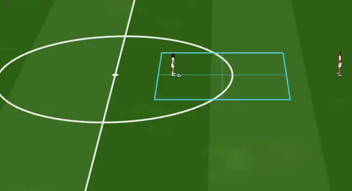
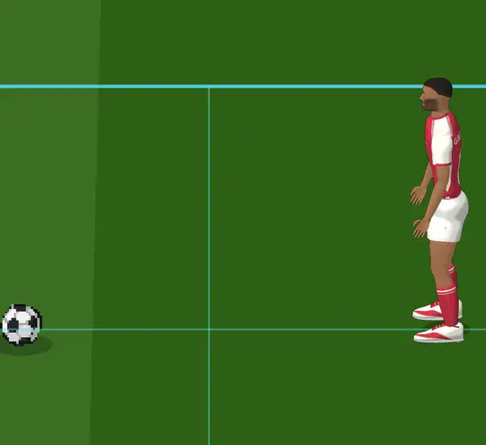
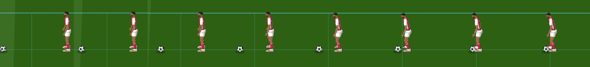
| contact | tick | player | foot | kind | outcome / v0 | boot–ball cm | reach cm | body | rel. speed / own speed | |
|---|---|---|---|---|---|---|---|---|---|---|
| reception | 124 | B (gabriel) | R | CUSHION | CLEAN | 0.2 | 30.6 | standing · plant ankle locked | 6.7 | |
| pass | 46 | A (cucurella) | R | SHORT / INSIDE | 12.152 m/s | 0.3 | 15.8 | plant swing | 0.099 | inside |
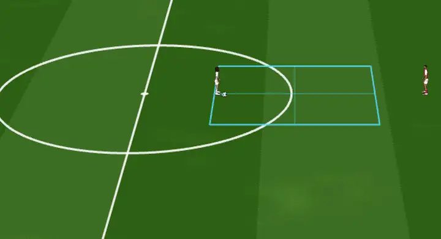
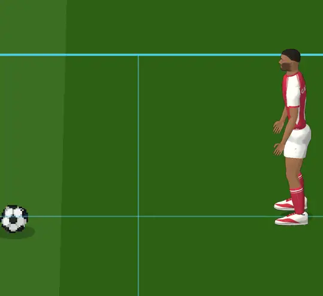
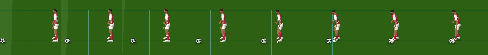
| contact | tick | player | foot | kind | outcome / v0 | boot–ball cm | reach cm | body | rel. speed / own speed | |
|---|---|---|---|---|---|---|---|---|---|---|
| reception | 124 | B (gabriel) | L | CUSHION | CLEAN | 0.2 | 30.6 | standing · plant ankle locked | 6.7 | |
| pass | 46 | A (cucurella) | R | SHORT / INSIDE | 12.152 m/s | 0.3 | 15.9 | plant ankle locked | 0.104 | inside |
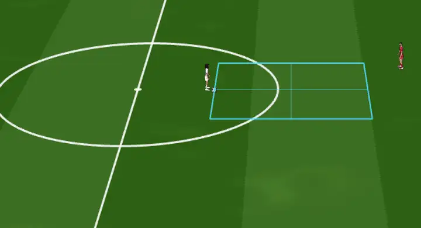
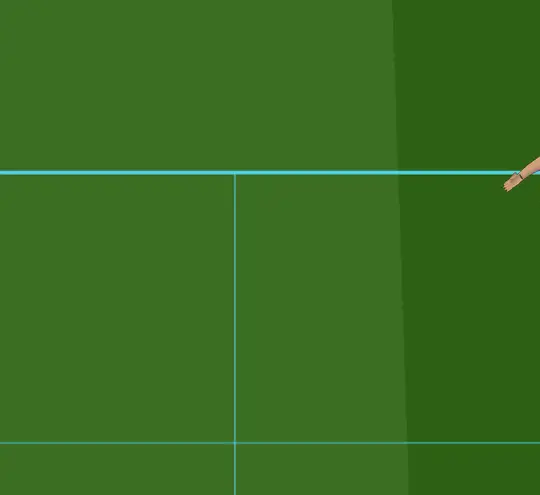
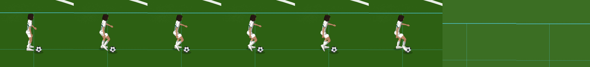
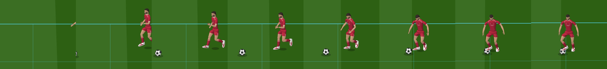
| contact | tick | player | foot | kind | outcome / v0 | boot–ball cm | reach cm | body | rel. speed / own speed | |
|---|---|---|---|---|---|---|---|---|---|---|
| reception | 97 | B (szoboszlai) | R | CUSHION | CLEAN | 0.5 | 19.9 | standing · plant ankle locked | 8.2 | |
| pass | 36 | A (cucurella) | R | SHORT / INSIDE | 12.19 m/s | 0.3 | 15.3 | plant toe locked | 0.061 | inside |
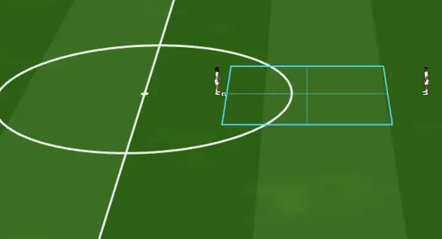
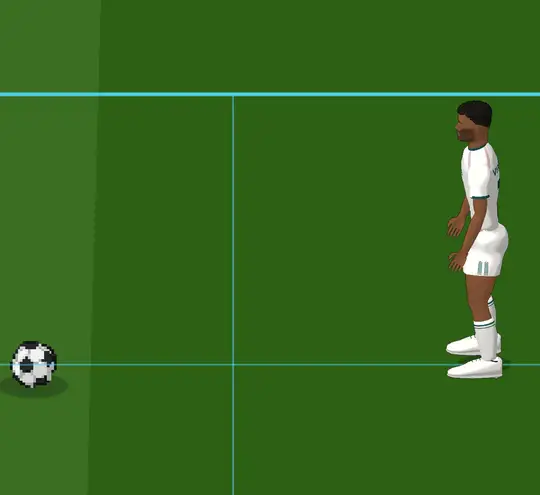
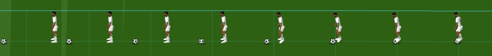
| contact | tick | player | foot | kind | outcome / v0 | boot–ball cm | reach cm | body | rel. speed / own speed | |
|---|---|---|---|---|---|---|---|---|---|---|
| reception | 125 | B (vinicius) | L | DIRECTIONAL | CLEAN | 0.6 | 33.8 | standing · plant ankle locked | 6.6 | |
| pass | 46 | A (cucurella) | R | SHORT / INSIDE | 12.152 m/s | 0.3 | 15.8 | plant ankle locked | 0.101 | inside |
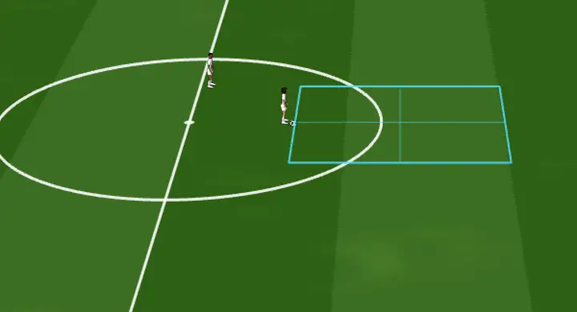
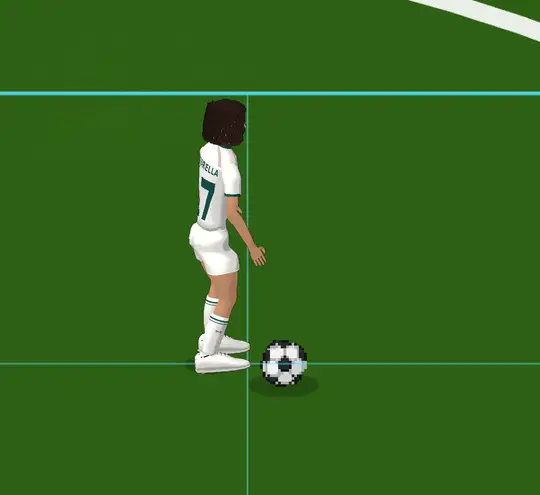
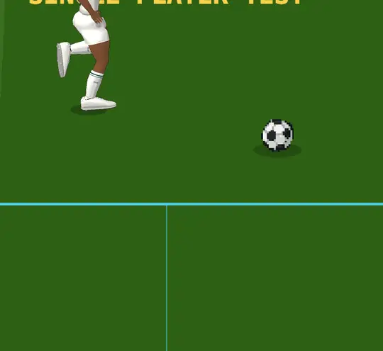
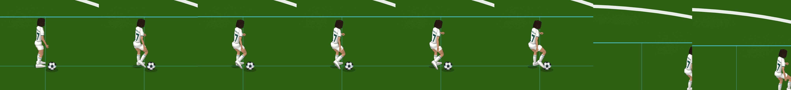
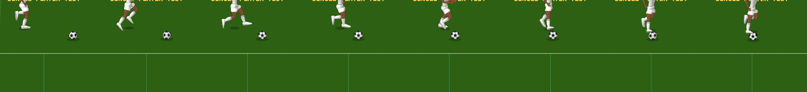
| contact | tick | player | foot | kind | outcome / v0 | boot–ball cm | reach cm | body | rel. speed / own speed | |
|---|---|---|---|---|---|---|---|---|---|---|
| reception | 217 | B (vinicius) | R | RUNNING | CLEAN | 2.9 | 33.0 | moving · plant toe locked | 2.9 | |
| pass | 46 | A (cucurella) | R | THROUGH / INSIDE | 11.023 m/s | 0.3 | 14.0 | plant toe locked | 0.052 | inside |
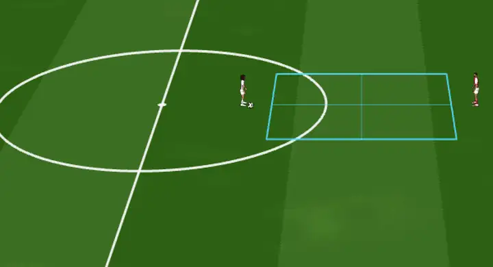
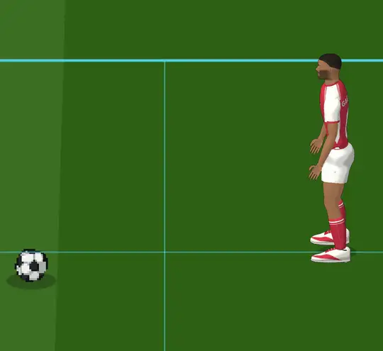
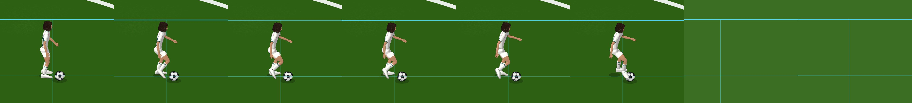
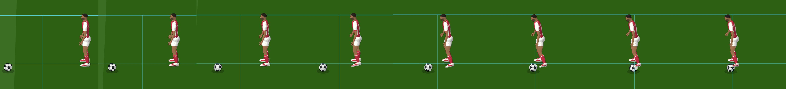
| contact | tick | player | foot | kind | outcome / v0 | boot–ball cm | reach cm | body | rel. speed / own speed | |
|---|---|---|---|---|---|---|---|---|---|---|
| reception | 126 | B (gabriel) | L | CUSHION | CLEAN | 0.6 | 11.3 | standing · plant ankle locked | 6.6 | stretch |
| pass | 46 | A (cucurella) | R | SHORT / INSIDE | 12.154 m/s | 0.3 | 16.0 | plant ankle locked | 0.113 | inside |
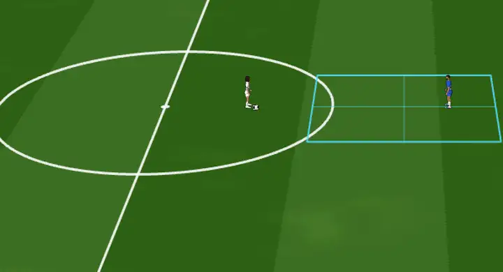
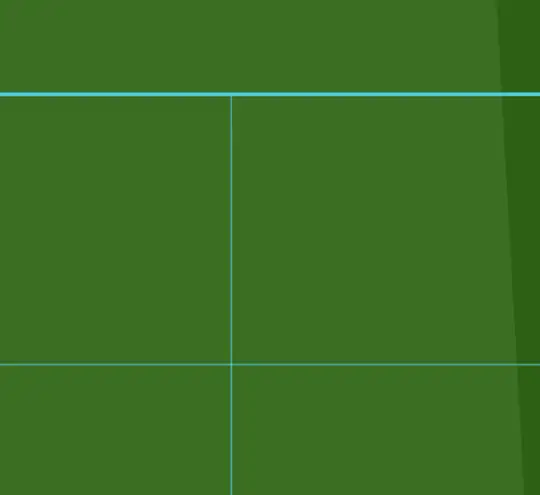
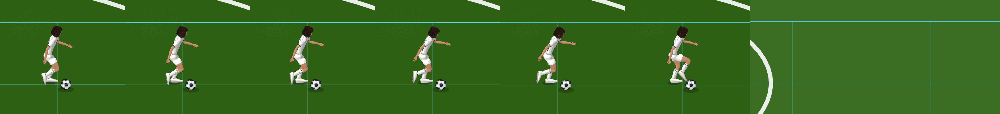
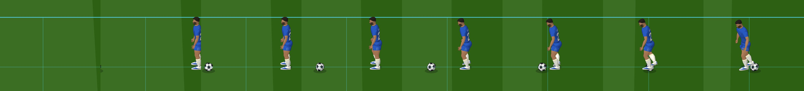
| contact | tick | player | foot | kind | outcome / v0 | boot–ball cm | reach cm | body | rel. speed / own speed | |
|---|---|---|---|---|---|---|---|---|---|---|
| reception | 106 | B (james) | R | LOOSE | LOOSE | 0.9 | 36.0 | standing · plant ankle locked | 10.4 | |
| pass | 55 | A (cucurella) | R | DRIVEN / LACES | 14 m/s | 0.3 | 13.2 | plant toe locked | 0.042 | toe |
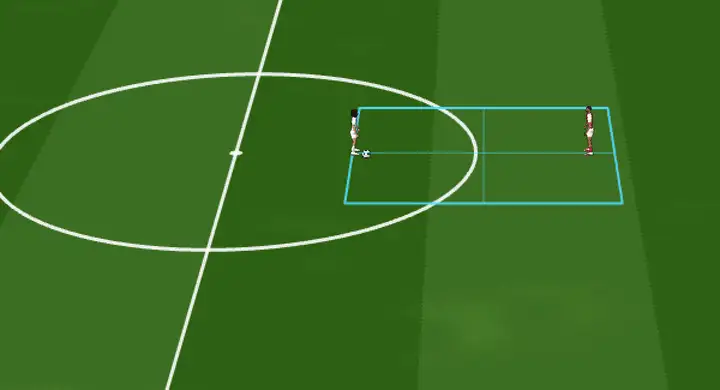
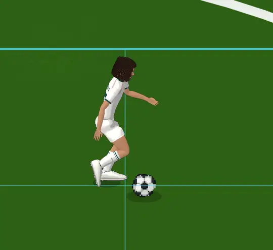
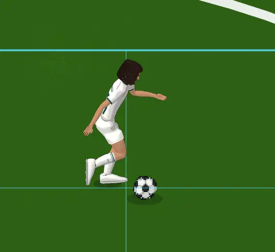
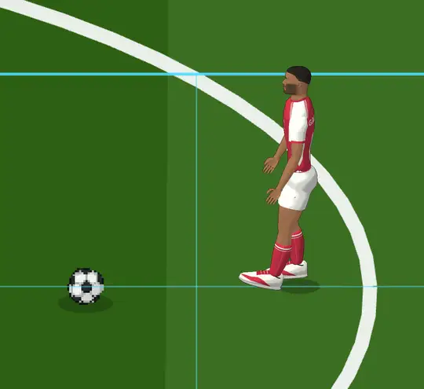
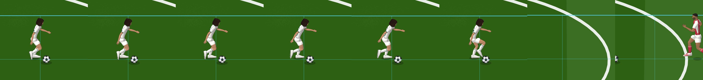
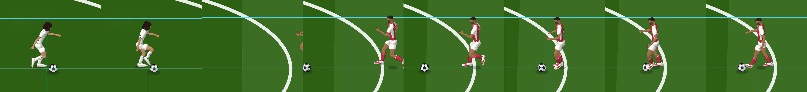
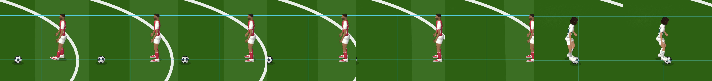
| contact | tick | player | foot | kind | outcome / v0 | boot–ball cm | reach cm | body | rel. speed / own speed | |
|---|---|---|---|---|---|---|---|---|---|---|
| reception | 72 | B (gabriel) | L | DEFLECT | DEFLECT | 0.7 | 24.9 | moving · plant ankle locked | 15.4 | |
| reception | 110 | A (cucurella) | R | CUSHION | CLEAN | 0.2 | 20.8 | standing · plant toe locked | 5.0 | |
| pass | 55 | A (cucurella) | R | DRIVEN / LACES | 14 m/s | 0.3 | 13.1 | plant toe locked | 0.042 | toe |
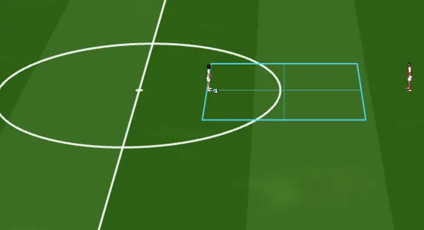
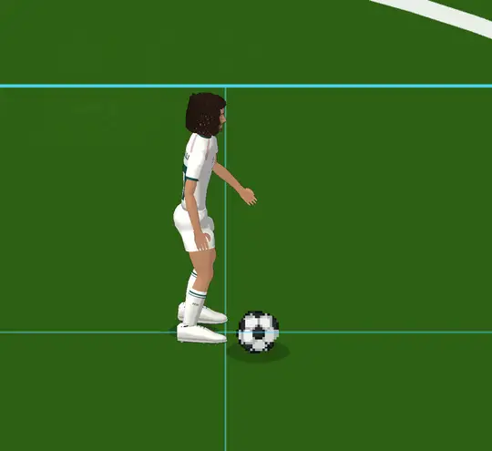
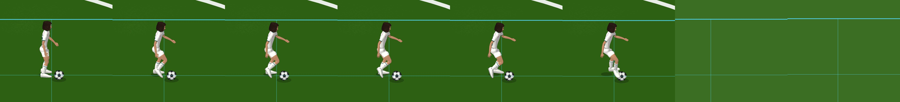
| contact | tick | player | foot | kind | outcome / v0 | boot–ball cm | reach cm | body | rel. speed / own speed | |
|---|---|---|---|---|---|---|---|---|---|---|
| pass | 46 | A (cucurella) | R | SHORT / INSIDE | 12.173 m/s | 0.3 | 16.3 | plant ankle locked | 0.137 | inside |
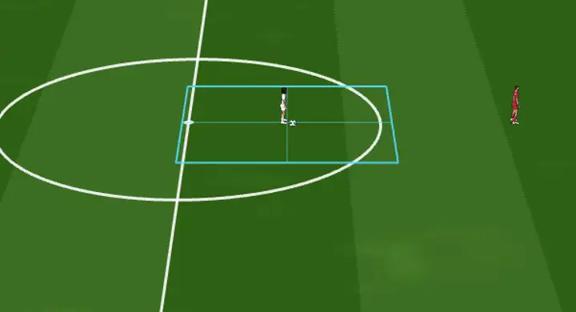
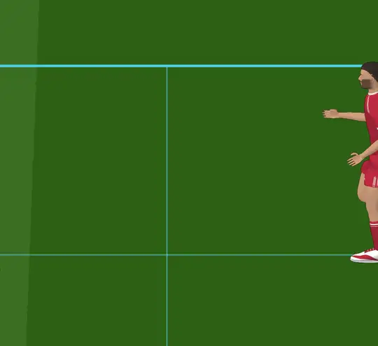
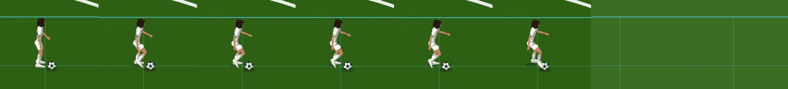
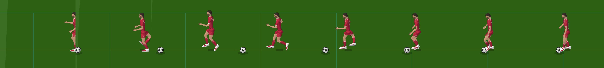
| contact | tick | player | foot | kind | outcome / v0 | boot–ball cm | reach cm | body | rel. speed / own speed | |
|---|---|---|---|---|---|---|---|---|---|---|
| reception | 128 | B (szoboszlai) | L | CUSHION | CLEAN | 0.9 | 33.3 | standing · plant ankle locked | 7.1 | |
| pass | 46 | A (cucurella) | R | SHORT / INSIDE | 11.628 m/s | 0.3 | 15.9 | plant ankle locked | 0.101 | inside |
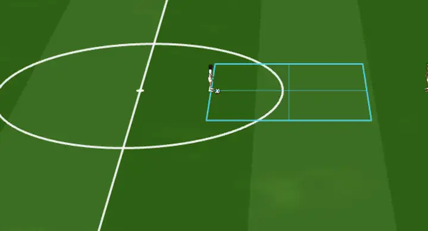
| contact | tick | player | foot | kind | outcome / v0 | boot–ball cm | reach cm | body | rel. speed / own speed | |
|---|---|---|---|---|---|---|---|---|---|---|
| reception | 129 | B (gabriel) | R | CUSHION | CLEAN | 0.2 | 38.8 | standing · plant ankle locked | 6.7 | |
| pass | 46 | A (cucurella) | R | SHORT / INSIDE | 12.493 m/s | 0.3 | 15.8 | plant ankle locked | 0.101 | inside |
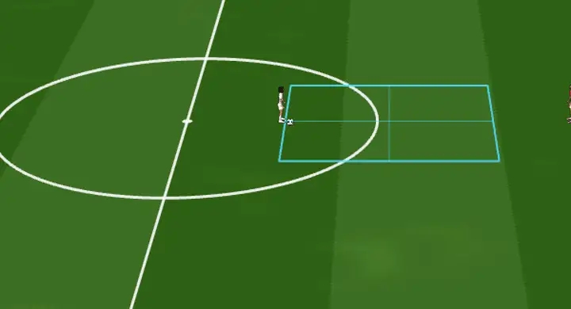
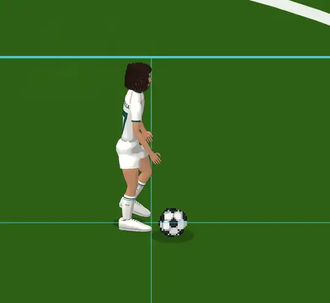
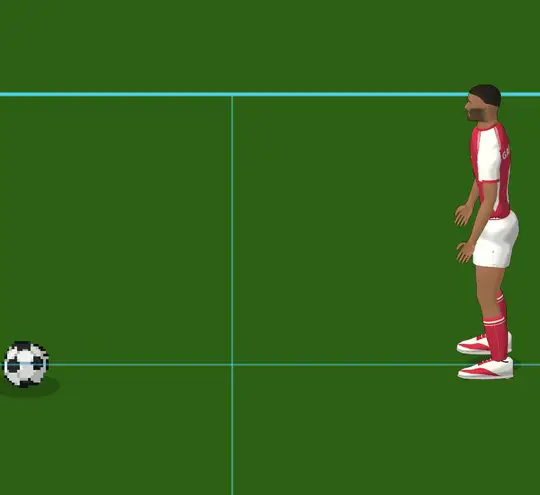
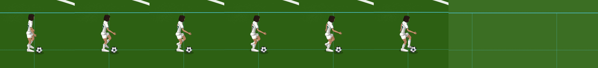
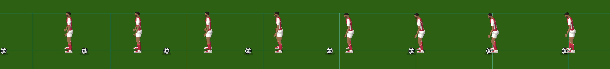
| contact | tick | player | foot | kind | outcome / v0 | boot–ball cm | reach cm | body | rel. speed / own speed | |
|---|---|---|---|---|---|---|---|---|---|---|
| reception | 129 | B (gabriel) | R | CUSHION | CLEAN | 0.2 | 38.8 | standing · plant ankle locked | 6.7 | |
| pass | 46 | A (cucurella) | L | SHORT / INSIDE | 12.493 m/s | 0.3 | 15.8 | plant ankle locked | 0.101 | inside |
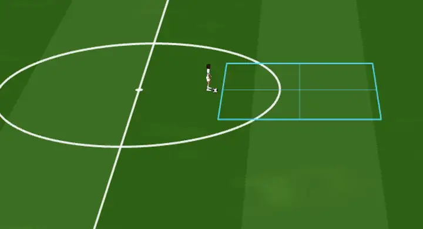
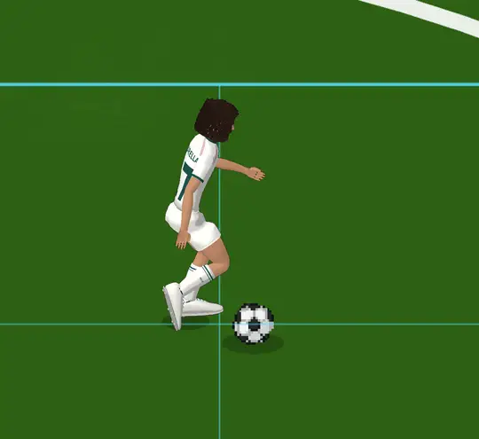
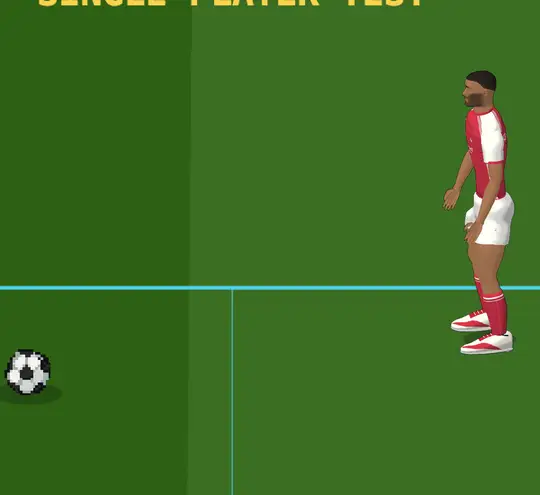
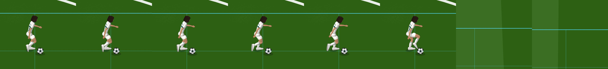
| contact | tick | player | foot | kind | outcome / v0 | boot–ball cm | reach cm | body | rel. speed / own speed | |
|---|---|---|---|---|---|---|---|---|---|---|
| reception | 163 | B (gabriel) | R | CUSHION | CLEAN | 0.3 | 38.5 | standing · plant ankle locked | 7.2 | |
| pass | 55 | A (cucurella) | R | DRIVEN / LACES | 14.718 m/s | 0.3 | 13.2 | plant toe locked | 0.018 | toe |
| contact | tick | player | foot | kind | outcome / v0 | boot–ball cm | reach cm | body | rel. speed / own speed | |
|---|---|---|---|---|---|---|---|---|---|---|
| reception | 104 | B (vinicius) | L | CUSHION | CLEAN | 0.9 | 34.1 | moving · plant release | 8.2 | stretch |
| pass | 46 | A (cucurella) | R | THROUGH / INSIDE | 12.627 m/s | 0.3 | 14.3 | plant toe locked | 0.029 | inside |
other simulation events: OUT_OF_REACH@100
| contact | tick | player | foot | kind | outcome / v0 | boot–ball cm | reach cm | body | rel. speed / own speed | |
|---|---|---|---|---|---|---|---|---|---|---|
| reception | 207 | B (gabriel) | R | CUSHION | CLEAN | 0.4 | 38.2 | standing · plant ankle locked | 6.7 | |
| pass | 83 | A (cucurella) | R | SHORT / INSIDE | 15.346 m/s | 0.5 | 19.1 | plant release | 4.407 | inside |
| contact | tick | player | foot | kind | outcome / v0 | boot–ball cm | reach cm | body | rel. speed / own speed | |
|---|---|---|---|---|---|---|---|---|---|---|
| reception | 225 | B (gabriel) | R | CUSHION | CLEAN | 0.5 | 37.8 | standing · plant ankle locked | 6.6 | |
| pass | 117 | A (cucurella) | R | SHORT / INSIDE | 14.2 m/s | 0.3 | 12.7 | plant ankle locked | 2.513 | inside |
| contact | tick | player | foot | kind | outcome / v0 | boot–ball cm | reach cm | body | rel. speed / own speed | |
|---|---|---|---|---|---|---|---|---|---|---|
| reception | 117 | B (gabriel) | R | CUSHION | CLEAN | 0.4 | 38.0 | standing · plant ankle locked | 6.6 | |
| pass | 46 | A (cucurella) | R | SHORT / INSIDE | 11.607 m/s | 1.5 | 28.8 | plant release | 1.214 | inside |
| contact | tick | player | foot | kind | outcome / v0 | boot–ball cm | reach cm | body | rel. speed / own speed | |
|---|---|---|---|---|---|---|---|---|---|---|
| reception | 105 | B (gabriel) | L | CUSHION | CLEAN | 0.7 | 7.5 | standing · plant ankle locked | 7.8 | |
| reception | 241 | A (cucurella) | R | CUSHION | CLEAN | -0.6 | 34.6 | standing · plant release | 8.6 | |
| pass | 46 | A (cucurella) | R | SHORT / INSIDE | 11.252 m/s | 0.3 | 14.9 | plant toe locked | 0.034 | inside |
| pass | 196 | B (gabriel) | R | SHORT / INSIDE | 10.736 m/s | 0.3 | 16.0 | plant ankle locked | 0.047 | inside |
| contact | tick | player | foot | kind | outcome / v0 | boot–ball cm | reach cm | body | rel. speed / own speed | |
|---|---|---|---|---|---|---|---|---|---|---|
| reception | 105 | B (gabriel) | L | CUSHION | CLEAN | 0.5 | 27.6 | standing · plant swing | 8.1 | |
| reception | 245 | C (james) | L | CUSHION | CLEAN | 0.9 | 28.5 | standing · plant ankle locked | 8.9 | |
| reception | 401 | A (cucurella) | L | CUSHION | CLEAN | 1.3 | 21.9 | standing · plant ankle locked | 8.8 | |
| pass | 46 | A (cucurella) | R | SHORT / INSIDE | 11.689 m/s | 0.3 | 13.2 | plant toe locked | 0.113 | inside |
| pass | 191 | B (gabriel) | R | SHORT / INSIDE | 11.624 m/s | 0.6 | 15.7 | plant ankle locked | 0.943 | inside |
| pass | 346 | C (james) | R | SHORT / INSIDE | 11.657 m/s | 0.1 | 15.1 | plant ankle locked | 0.238 | inside |
| contact | tick | player | foot | kind | outcome / v0 | boot–ball cm | reach cm | body | rel. speed / own speed | |
|---|---|---|---|---|---|---|---|---|---|---|
| reception | 125 | B (szoboszlai) | L | DIRECTIONAL | CLEAN | 0.5 | 35.1 | standing · plant ankle locked | 6.6 | |
| pass | 46 | A (cucurella) | R | SHORT / INSIDE | 12.152 m/s | 0.3 | 15.8 | plant ankle locked | 0.101 | inside |
| contact | tick | player | foot | kind | outcome / v0 | boot–ball cm | reach cm | body | rel. speed / own speed | |
|---|---|---|---|---|---|---|---|---|---|---|
| reception | 100 | B (gabriel) | L | CUSHION | CLEAN | 2.1 | 27.8 | standing · plant ankle locked | 9.2 | |
| reception | 188 | A (cucurella) | R | CUSHION | CLEAN | 12.4 | 34.6 | standing · plant release | 8.4 | |
| pass | 46 | A (cucurella) | R | SHORT / INSIDE | 11.972 m/s | 0.3 | 15.9 | plant ankle locked | 0.101 | inside |
| pass | 142 | B (gabriel) | R | SHORT / INSIDE | 10.737 m/s | 0.4 | 18.0 | plant ankle locked | 0.107 | inside |
other simulation events: OUT_OF_REACH@162
| contact | tick | player | foot | kind | outcome / v0 | boot–ball cm | reach cm | body | rel. speed / own speed | |
|---|---|---|---|---|---|---|---|---|---|---|
| reception | 127 | B (osimhen) | R | DIRECTIONAL | CLEAN | 0.5 | 35.2 | standing · plant ankle locked | 6.6 | |
| pass | 46 | A (cucurella) | R | SHORT / INSIDE | 12.297 m/s | 0.3 | 15.1 | plant toe locked | 0.051 | inside |
The same 24 fixtures with the attacking players cast as each body (the simulation keeps the reference leg length, so outcomes must be — and are — identical across bodies; the residuals are the bodies' own geometry). Boot–ball = the inside face (receptions, inside passes) or the toe (laces) against the ball surface, at the authoritative contact tick, final solved state.
| body | receptions | median cm | p95 | max | passes | median cm | p95 | max | plant locked at strike | plant slide max cm | outcomes |
|---|---|---|---|---|---|---|---|---|---|---|---|
| generic | 27 | 0.6 | 1.7 | 13.7 | 28 | 0.0 | 1.2 | 1.2 | 22/28 | 1.6 | {"CLEAN": 27, "LOOSE": 1} |
| cucurella | 27 | 0.6 | 3.2 | 12.4 | 28 | 0.3 | 1.0 | 1.5 | 23/28 | 1.6 | {"CLEAN": 27, "LOOSE": 1} |
| gabriel | 27 | 0.5 | 2.1 | 12.6 | 28 | 0.4 | 0.8 | 1.5 | 23/28 | 1.7 | {"CLEAN": 27, "LOOSE": 1} |
| james | 27 | 0.6 | 2.4 | 13.9 | 28 | 0.4 | 1.0 | 1.7 | 18/28 | 1.9 | {"CLEAN": 27, "LOOSE": 1} |
| szoboszlai | 27 | 0.5 | 2.2 | 12.4 | 28 | 0.4 | 0.7 | 1.5 | 20/28 | 1.8 | {"CLEAN": 27, "LOOSE": 1} |
| vinicius | 27 | 0.6 | 2.9 | 12.8 | 28 | 0.3 | 1.0 | 1.6 | 20/28 | 1.6 | {"CLEAN": 27, "LOOSE": 1} |
| osimhen | 27 | 0.5 | 2.2 | 12.5 | 28 | 0.4 | 0.7 | 1.5 | 20/28 | 1.8 | {"CLEAN": 27, "LOOSE": 1} |
Worst per-tick pop (change of a joint's per-tick displacement, root frame — the Locomotion V1 discontinuity metric) on the receiver in the window 0.5 s before to 1 s after each contact, Gabriel, with the receiving layer ON and with it switched OFF (same authoritative motion: the control shows what the locomotion itself does in that window). Plant slide = worst planted-foot slide while in contact.
| fixture | contact tick | foot / kind | pop ON cm/tick | pop OFF (control) | plant slide ON cm |
|---|---|---|---|---|---|
| recv_stand_R | 124 | R CUSHION | 13.9 | 2.7 | 0.4 |
| recv_meet | 112 | R CUSHION | 37.5 | 17.0 | 1.0 |
| recv_directional | 125 | L DIRECTIONAL | 35.0 | 30.8 | 0.4 |
| recv_running | 217 | R RUNNING | 66.8 | 43.5 | 0.0 |
| recv_stretch | 126 | L CUSHION | 7.5 | 7.9 | 0.8 |
| chain_recv_pass | 100 | L CUSHION | 27.1 | 28.2 | 0.2 |
| chain_recv_pass | 188 | R CUSHION | 42.0 | 36.7 | 1.0 |
| chain_recv_dribble | 125 | L DIRECTIONAL | 53.6 | 42.0 | 0.4 |
| chain_recv_shoot | 127 | R DIRECTIONAL | 25.4 | 24.5 | 0.2 |
| chain_ab_ba | 105 | L CUSHION | 23.0 | 13.4 | 0.3 |
| chain_ab_ba | 241 | R CUSHION | 39.9 | 23.3 | 0.4 |
| chain_triangle | 105 | L CUSHION | 32.9 | 26.4 | 0.7 |
| chain_triangle | 245 | L CUSHION | 36.9 | 36.9 | 1.4 |
| chain_triangle | 401 | L CUSHION | 27.3 | 19.4 | 1.7 |
scenario ticks trace max|d| events verdict recv_stand_R 200 0 4 IDENTICAL recv_stand_L 200 0 4 IDENTICAL recv_moving 220 0 4 IDENTICAL recv_meet 220 0 4 IDENTICAL recv_directional 260 0 4 IDENTICAL recv_running 260 0 4 IDENTICAL recv_stretch 200 0 4 IDENTICAL recv_unreachable 200 0 2 IDENTICAL recv_behind 220 0 4 IDENTICAL recv_too_fast 180 0 5 IDENTICAL recv_heavy 200 0 3 IDENTICAL pass_short_R 160 0 4 IDENTICAL pass_short_L 160 0 4 IDENTICAL pass_driven 180 0 4 IDENTICAL pass_through 240 0 5 IDENTICAL pass_diag_left 180 0 4 IDENTICAL pass_diag_right 180 0 4 IDENTICAL pass_lateral 180 0 4 IDENTICAL pass_walking 220 0 4 IDENTICAL pass_jogging 220 0 4 IDENTICAL pass_running 220 0 4 IDENTICAL pass_after_dribble 260 0 4 IDENTICAL chain_ab_ba 330 0 8 IDENTICAL chain_triangle 520 0 12 IDENTICAL chain_recv_pass 260 0 9 IDENTICAL chain_recv_dribble 300 0 4 IDENTICAL chain_recv_shoot 300 0 4 IDENTICAL anim A true anim B false page errors 0 0 GATE PASS — receiving and passing presentation explain the authoritative outcome, they never change it
scenario ticks trace max|d| events verdict recv_stand_R 200 0 4 IDENTICAL recv_stand_L 200 0 4 IDENTICAL recv_moving 220 0 4 IDENTICAL recv_meet 220 0 4 IDENTICAL recv_directional 260 0 4 IDENTICAL recv_running 260 0 4 IDENTICAL recv_stretch 200 0 4 IDENTICAL recv_unreachable 200 0 2 IDENTICAL recv_behind 220 0 4 IDENTICAL recv_too_fast 180 0 5 IDENTICAL recv_heavy 200 0 3 IDENTICAL pass_short_R 160 0 4 IDENTICAL pass_short_L 160 0 4 IDENTICAL pass_driven 180 0 4 IDENTICAL pass_through 240 0 5 IDENTICAL pass_diag_left 180 0 4 IDENTICAL pass_diag_right 180 0 4 IDENTICAL pass_lateral 180 0 4 IDENTICAL pass_walking 220 0 4 IDENTICAL pass_jogging 220 0 4 IDENTICAL pass_running 220 0 4 IDENTICAL pass_after_dribble 260 0 4 IDENTICAL chain_ab_ba 330 0 8 IDENTICAL chain_triangle 520 0 12 IDENTICAL chain_recv_pass 260 0 9 IDENTICAL chain_recv_dribble 300 0 4 IDENTICAL chain_recv_shoot 300 0 4 IDENTICAL anim A true anim B true page errors 0 0 GATE PASS — receiving and passing presentation explain the authoritative outcome, they never change it
scenario ticks auth max|d| pose max|d| verdict generic:drib:walk 360 0 0 IDENTICAL generic:drib:walk:turn 360 0 0 IDENTICAL generic:drib:jog 360 0 0 IDENTICAL generic:drib:jog:turn 360 0 0 IDENTICAL generic:drib:run 360 0 0 IDENTICAL generic:drib:run:turn 360 0 0 IDENTICAL generic:drib:sprint 360 0 0 IDENTICAL generic:drib:sprint:turn 360 0 0 IDENTICAL generic:shot:1:R:stand 200 0 0 IDENTICAL generic:shot:1:R:run 200 0 0 IDENTICAL generic:shot:1:L:stand 200 0 0 IDENTICAL generic:shot:1:L:run 200 0 0 IDENTICAL generic:shot:2:R:stand 200 0 0 IDENTICAL generic:shot:2:R:run 200 0 0 IDENTICAL generic:shot:2:L:stand 200 0 0 IDENTICAL generic:shot:2:L:run 200 0 0 IDENTICAL generic:shot:3:R:stand 200 0 0 IDENTICAL generic:shot:3:R:run 200 0 0 IDENTICAL generic:shot:3:L:stand 200 0 0 IDENTICAL generic:shot:3:L:run 200 0 0 IDENTICAL generic:shot:4:R:stand 200 0 0 IDENTICAL generic:shot:4:R:run 200 0 0 IDENTICAL generic:shot:4:L:stand 200 0 0 IDENTICAL generic:shot:4:L:run 200 0 0 IDENTICAL generic:shot:5:R:stand 200 0 0 IDENTICAL generic:shot:5:R:run 200 0 0 IDENTICAL generic:shot:5:L:stand 200 0 0 IDENTICAL generic:shot:5:L:run 200 0 0 IDENTICAL generic:loose: 240 0 0 IDENTICAL generic:loco: 720 0 0 IDENTICAL cucurella:drib:walk 360 0 0 IDENTICAL cucurella:drib:walk:turn 360 0 0 IDENTICAL cucurella:drib:jog 360 0 0 IDENTICAL cucurella:drib:jog:turn 360 0 0 IDENTICAL cucurella:drib:run 360 0 0 IDENTICAL cucurella:drib:run:turn 360 0 0 IDENTICAL cucurella:drib:sprint 360 0 0 IDENTICAL cucurella:drib:sprint:turn 360 0 0 IDENTICAL cucurella:shot:1:R:stand 200 0 0 IDENTICAL cucurella:shot:1:R:run 200 0 0 IDENTICAL cucurella:shot:1:L:stand 200 0 0 IDENTICAL cucurella:shot:1:L:run 200 0 0 IDENTICAL cucurella:shot:2:R:stand 200 0 0 IDENTICAL cucurella:shot:2:R:run 200 0 0 IDENTICAL cucurella:shot:2:L:stand 200 0 0 IDENTICAL cucurella:shot:2:L:run 200 0 0 IDENTICAL cucurella:shot:3:R:stand 200 0 0 IDENTICAL cucurella:shot:3:R:run 200 0 0 IDENTICAL cucurella:shot:3:L:stand 200 0 0 IDENTICAL cucurella:shot:3:L:run 200 0 0 IDENTICAL cucurella:shot:4:R:stand 200 0 0 IDENTICAL cucurella:shot:4:R:run 200 0 0 IDENTICAL cucurella:shot:4:L:stand 200 0 0 IDENTICAL cucurella:shot:4:L:run 200 0 0 IDENTICAL cucurella:shot:5:R:stand 200 0 0 IDENTICAL cucurella:shot:5:R:run 200 0 0 IDENTICAL cucurella:shot:5:L:stand 200 0 0 IDENTICAL cucurella:shot:5:L:run 200 0 0 IDENTICAL cucurella:loose: 240 0 0 IDENTICAL cucurella:loco: 720 0 0 IDENTICAL errors baseline 0 head 0 BASELINE GATE PASS — every pre-existing scenario is authoritative- and pose-identical to baseline/outfield-runtime-v1
| players | real characters | simulation ms mean / p95 | reception planning ms | squad presentation ms (all rigs) | GL render ms* |
|---|---|---|---|---|---|
| 2 | 2 | 0.076 / 0.20 | 0.000 / 0.00 | 0.28 / 0.40 | 23.4 |
| 6 | 6 | 0.132 / 0.30 | 0.092 / 0.20 | 0.70 / 1.20 | 23.4 |
| 22 | 22 | 0.178 / 0.40 | 0.210 / 0.50 | 1.83 / 2.30 | 23.0 |
* headless software GL, independent of player count — not a GPU figure. 60 fps budget 16.7 ms.
ofBootPlan puts the "R" boot where the rig renders the left foot (measured facing east / west / south: longitudinal match, lateral side swapped). world.py's own convention matches the rig. Changing it would move Dribbling V1's authoritative foot choice and timing, so it is untouched; the reception planner and the pass approach use the rig-correct side. Worth a decision in the dribbling polish pass.PT_RECV.ref, c.attrs, the noise slot) for Ball Control, Technique, Composure, Reactions, standing tackle; Short Passing, Vision, Agility and weak-foot quality are identified but not wired.baseline/outfield-runtime-v1. What changed is how the receiving action enters, holds and leaves the body.V1 attributed the one-touch return miss (chain_recv_pass, 12–14 cm) to the passer's own follow-through blocking the receiving action. That was wrong: the passer's kick record had ended ~100 ticks before the return arrived. The measured sequence is: the simulation's reception plan for the passer appears while he comes to meet the ball, drops out for 17 ticks while he accelerates, reappears only 9 ticks before contact, and switches from the moving to the standing model as he brakes — the contact point moves and the boot then needed 43–52 cm of correction against the kicks' 35 cm bound. The same late / switching plan, not an action-scheduling conflict, is what the fixes below address.
Every receiving fixture was run with the receiving layer OFF (the locomotion control — same authoritative motion), fully ON, and with each sub-layer alone or in pairs: the pose overlay, the plant overrides, the reach. Shown: in each phase the joint whose pop (cm/tick, root frame) exceeds the control most, when the excess is ≥ 5 cm/tick.
| fixture | contact | phase | joint | OFF | pose only | plants only | reach only | plants+reach | all (V1) |
|---|---|---|---|---|---|---|---|---|---|
| recv_meet | R CUSHION | lead-in | foot_L | 7 | 4 | 7 | 14 | 24 | 38 |
| recv_meet | R CUSHION | hold | shin_L | 6 | 10 | 10 | 6 | 9 | 11 |
| recv_meet | R CUSHION | exit | shin_R | 6 | 7 | 14 | 7 | 14 | 14 |
| recv_running | R RUNNING | lead-in | shin_R | 4 | 7 | 4 | 66 | 66 | 67 |
| recv_running | R RUNNING | exit | foot_R | 21 | 21 | 21 | 31 | 31 | 31 |
| recv_moving | R CUSHION | lead-in | shin_L | 8 | 31 | 14 | 8 | 13 | 20 |
| recv_moving | R CUSHION | hold | shin_L | 8 | 18 | 13 | 8 | 10 | 15 |
| recv_directional | L DIRECTIONAL | pre | shin_R | 0 | 0 | 6 | 0 | 6 | 7 |
| recv_directional | L DIRECTIONAL | lead-in | shin_R | 2 | 1 | 10 | 2 | 15 | 13 |
| recv_directional | L DIRECTIONAL | hold | toe_L | 7 | 4 | 18 | 37 | 15 | 14 |
| recv_directional | L DIRECTIONAL | exit | shin_R | 13 | 13 | 30 | 16 | 32 | 33 |
| chain_recv_pass | L CUSHION | hold | shin_R | 7 | 6 | 9 | 10 | 6 | 14 |
| chain_recv_pass | L CUSHION | exit | shin_R | 11 | 11 | 11 | 11 | 11 | 17 |
| chain_recv_pass | R CUSHION | lead-in | foot_R | 9 | 7 | 13 | 20 | 20 | 26 |
| chain_recv_pass | R CUSHION | hold | shin_L | 16 | 39 | 19 | 28 | 19 | 42 |
| chain_ab_ba | L CUSHION | lead-in | toe_L | 4 | 5 | 4 | 26 | 26 | 23 |
| chain_ab_ba | R CUSHION | lead-in | toe_R | 5 | 26 | 5 | 40 | 40 | 40 |
| chain_ab_ba | R CUSHION | hold | shin_L | 10 | 21 | 12 | 10 | 12 | 29 |
| recv_stand_R | R CUSHION | pre | shin_L | 0 | 0 | 6 | 0 | 6 | 7 |
| recv_stand_R | R CUSHION | lead-in | shin_R | 0 | 0 | 6 | 0 | 11 | 9 |
| recv_stand_R | R CUSHION | hold | shin_R | 0 | 0 | 13 | 0 | 7 | 14 |
| recv_stand_R | R CUSHION | exit | shin_R | 2 | 2 | 2 | 2 | 7 | 7 |
Worst per-tick pop in the phase, V1 → V1.1, with the receiving-OFF control in brackets (the locomotion's own motion in the same window). Lead-in = the 10 ticks before contact, hold = the 14 after, exit = the following 46. Green: V1.1 at or below the V1 value or within 3 cm/tick of the control.
| fixture | contact | phase | receiving knee | receiving foot | support knee | support foot | trunk | arms |
|---|---|---|---|---|---|---|---|---|
| recv_stand_R | R CUSHION | lead-in | 9 → 3 (0) | 4 → 5 (0) | 4 → 5 (0) | 0 → 0 (0) | 2 → 2 (0) | 2 → 2 (0) |
| recv_stand_R | R CUSHION | hold | 14 → 3 (0) | 4 → 4 (0) | 4 → 2 (0) | 0 → 0 (0) | 2 → 1 (0) | 2 → 1 (0) |
| recv_stand_R | R CUSHION | exit | 7 → 2 (2) | 3 → 2 (3) | 6 → 1 (1) | 3 → 3 (3) | 3 → 0 (0) | 3 → 1 (0) |
| recv_stand_L | L CUSHION | lead-in | 9 → 3 (0) | 4 → 5 (0) | 4 → 5 (0) | 0 → 0 (0) | 2 → 2 (0) | 2 → 2 (0) |
| recv_stand_L | L CUSHION | hold | 14 → 3 (0) | 4 → 4 (0) | 4 → 2 (0) | 0 → 0 (0) | 2 → 1 (0) | 2 → 1 (0) |
| recv_stand_L | L CUSHION | exit | 7 → 2 (2) | 3 → 2 (3) | 6 → 1 (1) | 3 → 3 (3) | 3 → 0 (0) | 3 → 1 (0) |
| recv_moving | R CUSHION | lead-in | 10 → 6 (7) | 9 → 8 (13) | 20 → 5 (8) | 13 → 9 (6) | 2 → 3 (7) | 4 → 4 (9) |
| recv_moving | R CUSHION | hold | 13 → 3 (10) | 4 → 2 (6) | 15 → 7 (8) | 3 → 4 (4) | 3 → 3 (4) | 4 → 3 (4) |
| recv_moving | R CUSHION | exit | 8 → 13 (12) | 5 → 3 (5) | 6 → 11 (7) | 5 → 3 (3) | 5 → 3 (2) | 5 → 3 (2) |
| recv_meet | R CUSHION | lead-in | 22 → 14 (15) | 18 → 14 (14) | 30 → 6 (6) | 38 → 6 (7) | 4 → 5 (6) | 6 → 6 (6) |
| recv_meet | R CUSHION | hold | 18 → 9 (17) | 4 → 4 (5) | 11 → 5 (6) | 5 → 12 (6) | 3 → 3 (4) | 4 → 4 (6) |
| recv_meet | R CUSHION | exit | 14 → 4 (6) | 6 → 4 (4) | 7 → 2 (6) | 4 → 8 (3) | 3 → 1 (3) | 3 → 1 (3) |
| recv_directional | L DIRECTIONAL | lead-in | 9 → 5 (1) | 6 → 5 (3) | 13 → 12 (2) | 3 → 3 (3) | 4 → 4 (1) | 4 → 4 (1) |
| recv_directional | L DIRECTIONAL | hold | 11 → 7 (8) | 14 → 8 (9) | 10 → 5 (4) | 5 → 2 (2) | 7 → 3 (3) | 8 → 6 (5) |
| recv_directional | L DIRECTIONAL | exit | 31 → 31 (31) | 35 → 20 (20) | 33 → 12 (13) | 21 → 13 (13) | 9 → 9 (9) | 10 → 10 (10) |
| recv_running | R RUNNING | lead-in | 67 → 7 (4) | 21 → 15 (4) | 11 → 9 (9) | 6 → 5 (5) | 6 → 4 (4) | 7 → 6 (5) |
| recv_running | R RUNNING | hold | 16 → 12 (21) | 11 → 18 (12) | 41 → 39 (39) | 9 → 9 (9) | 6 → 8 (8) | 7 → 8 (8) |
| recv_running | R RUNNING | exit | 41 → 30 (43) | 31 → 22 (21) | 22 → 22 (22) | 20 → 20 (20) | 12 → 12 (12) | 13 → 13 (13) |
| recv_stretch | L CUSHION | lead-in | 3 → 2 (0) | 4 → 3 (0) | 3 → 5 (0) | 0 → 0 (0) | 1 → 1 (0) | 1 → 1 (0) |
| recv_stretch | L CUSHION | hold | 3 → 7 (0) | 2 → 3 (0) | 1 → 8 (0) | 0 → 0 (0) | 1 → 3 (0) | 1 → 3 (0) |
| recv_stretch | L CUSHION | exit | 6 → 8 (8) | 6 → 7 (3) | 6 → 6 (6) | 5 → 6 (4) | 5 → 3 (3) | 5 → 3 (3) |
| recv_heavy | R LOOSE | lead-in | 9 → 8 (0) | 18 → 19 (0) | 14 → 12 (0) | 1 → 1 (0) | 4 → 4 (0) | 4 → 4 (0) |
| recv_heavy | R LOOSE | hold | 22 → 9 (6) | 20 → 11 (4) | 10 → 8 (8) | 7 → 12 (3) | 6 → 3 (2) | 6 → 3 (2) |
| recv_heavy | R LOOSE | exit | 28 → 21 (11) | 25 → 9 (5) | 19 → 19 (6) | 11 → 13 (5) | 8 → 12 (5) | 8 → 12 (5) |
| recv_behind | L CUSHION | lead-in | 68 → 7 (54) | 34 → 10 (23) | 5 → 6 (6) | 6 → 6 (6) | 6 → 6 (6) | 6 → 6 (6) |
| recv_behind | L CUSHION | hold | 14 → 14 (12) | 4 → 10 (9) | 3 → 5 (9) | 0 → 7 (2) | 3 → 4 (4) | 3 → 4 (4) |
| recv_behind | L CUSHION | exit | 6 → 6 (6) | 3 → 3 (2) | 9 → 6 (6) | 3 → 3 (3) | 3 → 2 (2) | 3 → 2 (2) |
| recv_too_fast | L DEFLECT | lead-in | 13 → 12 (9) | 30 → 32 (8) | 7 → 7 (7) | 8 → 9 (9) | 8 → 8 (8) | 8 → 9 (8) |
| recv_too_fast | L DEFLECT | hold | 16 → 7 (6) | 14 → 16 (6) | 7 → 12 (10) | 12 → 14 (14) | 6 → 6 (6) | 6 → 7 (7) |
| recv_too_fast | L DEFLECT | exit | 23 → 22 (24) | 24 → 13 (13) | 16 → 16 (17) | 18 → 18 (19) | 18 → 18 (19) | 18 → 18 (19) |
| recv_too_fast | R CUSHION | lead-in | 7 → 3 (0) | 4 → 4 (0) | 2 → 2 (0) | 0 → 0 (0) | 1 → 1 (0) | 1 → 1 (0) |
| recv_too_fast | R CUSHION | hold | 18 → 3 (0) | 3 → 3 (0) | 1 → 1 (0) | 0 → 0 (0) | 1 → 1 (0) | 1 → 1 (0) |
| recv_too_fast | R CUSHION | exit | 6 → 2 (2) | 3 → 5 (3) | 6 → 1 (1) | 4 → 4 (4) | 3 → 0 (0) | 3 → 1 (0) |
| pass_short_R | R CUSHION | lead-in | 9 → 4 (0) | 6 → 4 (0) | 10 → 10 (0) | 0 → 0 (0) | 4 → 3 (0) | 4 → 3 (0) |
| pass_short_R | R CUSHION | hold | 12 → 3 (0) | 4 → 4 (0) | 9 → 2 (0) | 4 → 0 (0) | 5 → 1 (0) | 5 → 1 (0) |
| pass_short_R | R CUSHION | exit | 3 → 2 (0) | 1 → 1 (0) | 3 → 1 (0) | 0 → 0 (0) | 1 → 0 (0) | 1 → 1 (0) |
| pass_driven | R CUSHION | lead-in | 9 → 5 (0) | 6 → 5 (0) | 11 → 12 (0) | 0 → 1 (0) | 4 → 3 (0) | 4 → 3 (0) |
| pass_driven | R CUSHION | hold | 14 → 3 (0) | 3 → 4 (0) | 14 → 3 (0) | 2 → 0 (0) | 6 → 1 (0) | 6 → 1 (0) |
| pass_driven | R CUSHION | exit | 2 → 1 (0) | 1 → 1 (0) | 1 → 0 (0) | 0 → 0 (0) | 0 → 0 (0) | 1 → 1 (0) |
| pass_through | L CUSHION | lead-in | 26 → 22 (21) | 57 → 50 (6) | 7 → 7 (7) | 11 → 14 (14) | 8 → 7 (7) | 8 → 8 (9) |
| pass_through | L CUSHION | hold | 6 → 7 (14) | 9 → 5 (4) | 36 → 9 (9) | 15 → 7 (7) | 6 → 3 (3) | 7 → 4 (4) |
| pass_through | L CUSHION | exit | 14 → 7 (6) | 29 → 3 (5) | 7 → 7 (7) | 3 → 3 (5) | 3 → 3 (5) | 3 → 3 (5) |
| pass_running | R CUSHION | lead-in | 9 → 5 (0) | 6 → 4 (0) | 12 → 12 (0) | 0 → 1 (0) | 4 → 4 (0) | 4 → 4 (0) |
| pass_running | R CUSHION | hold | 13 → 3 (0) | 5 → 4 (0) | 13 → 3 (0) | 5 → 0 (0) | 5 → 1 (0) | 5 → 1 (0) |
| pass_running | R CUSHION | exit | 0 → 0 (0) | 0 → 0 (0) | 0 → 0 (0) | 0 → 0 (0) | 0 → 0 (0) | 0 → 0 (0) |
| chain_ab_ba | L CUSHION | lead-in | 5 → 6 (2) | 23 → 13 (4) | 4 → 4 (4) | 3 → 3 (3) | 3 → 3 (2) | 4 → 4 (4) |
| chain_ab_ba | L CUSHION | hold | 9 → 17 (11) | 4 → 6 (5) | 12 → 9 (9) | 2 → 3 (3) | 5 → 5 (5) | 5 → 6 (6) |
| chain_ab_ba | L CUSHION | exit | 8 → 6 (6) | 3 → 2 (2) | 7 → 6 (6) | 3 → 3 (3) | 3 → 2 (2) | 3 → 2 (2) |
| chain_ab_ba | R CUSHION | lead-in | 21 → 7 (5) | 40 → 15 (5) | 5 → 11 (11) | 15 → 11 (11) | 4 → 5 (5) | 7 → 8 (7) |
| chain_ab_ba | R CUSHION | hold | 30 → 12 (13) | 14 → 5 (5) | 29 → 9 (10) | 11 → 9 (10) | 12 → 4 (5) | 12 → 6 (7) |
| chain_ab_ba | R CUSHION | exit | 6 → 2 (6) | 3 → 1 (3) | 6 → 0 (7) | 3 → 0 (3) | 3 → 0 (3) | 3 → 1 (3) |
| chain_triangle | L CUSHION | lead-in | 14 → 8 (7) | 16 → 12 (7) | 19 → 7 (26) | 33 → 9 (22) | 8 → 8 (8) | 9 → 8 (8) |
| chain_triangle | L CUSHION | hold | 31 → 9 (7) | 8 → 8 (3) | 24 → 10 (21) | 18 → 11 (25) | 9 → 4 (3) | 10 → 3 (4) |
| chain_triangle | L CUSHION | exit | 7 → 7 (11) | 3 → 3 (4) | 7 → 5 (10) | 6 → 3 (3) | 3 → 3 (3) | 6 → 6 (6) |
| chain_triangle | L CUSHION | lead-in | 7 → 7 (4) | 14 → 10 (4) | 5 → 4 (4) | 1 → 1 (1) | 3 → 2 (2) | 4 → 4 (4) |
| chain_triangle | L CUSHION | hold | 8 → 11 (14) | 6 → 6 (8) | 6 → 5 (10) | 4 → 7 (5) | 4 → 4 (4) | 4 → 4 (4) |
| chain_triangle | L CUSHION | exit | 6 → 6 (6) | 3 → 3 (2) | 7 → 6 (6) | 4 → 3 (3) | 3 → 2 (2) | 3 → 2 (2) |
| chain_triangle | L CUSHION | lead-in | 8 → 9 (11) | 25 → 12 (4) | 4 → 4 (4) | 0 → 0 (0) | 4 → 3 (2) | 3 → 3 (3) |
| chain_triangle | L CUSHION | hold | 27 → 19 (7) | 9 → 9 (7) | 21 → 10 (10) | 7 → 6 (6) | 11 → 4 (4) | 11 → 4 (4) |
| chain_triangle | L CUSHION | exit | 17 → 6 (6) | 7 → 3 (2) | 12 → 6 (6) | 6 → 3 (3) | 8 → 2 (2) | 8 → 2 (2) |
| chain_recv_pass | L CUSHION | lead-in | 11 → 5 (27) | 12 → 11 (24) | 7 → 6 (4) | 9 → 7 (6) | 6 → 5 (4) | 10 → 8 (5) |
| chain_recv_pass | L CUSHION | hold | 13 → 14 (19) | 5 → 4 (28) | 14 → 6 (7) | 4 → 0 (2) | 4 → 2 (2) | 4 → 2 (3) |
| chain_recv_pass | L CUSHION | exit | 6 → 4 (6) | 6 → 4 (3) | 17 → 14 (11) | 27 → 27 (27) | 5 → 3 (3) | 7 → 6 (6) |
| chain_recv_pass | R CUSHION | lead-in | 19 → 10 (16) | 27 → 16 (13) | 17 → 32 (37) | 12 → 17 (18) | 9 → 7 (12) | 10 → 8 (13) |
| chain_recv_pass | R CUSHION | hold | 30 → 9 (14) | 22 → 6 (7) | 42 → 12 (16) | 15 → 16 (11) | 18 → 7 (6) | 18 → 7 (7) |
| chain_recv_pass | R CUSHION | exit | 7 → 2 (6) | 3 → 2 (3) | 7 → 1 (6) | 2 → 3 (3) | 2 → 0 (3) | 2 → 1 (3) |
| chain_recv_dribble | L DIRECTIONAL | lead-in | 9 → 5 (1) | 6 → 5 (3) | 13 → 12 (2) | 3 → 3 (3) | 4 → 4 (1) | 4 → 4 (1) |
| chain_recv_dribble | L DIRECTIONAL | hold | 12 → 5 (8) | 14 → 8 (9) | 10 → 5 (4) | 5 → 2 (2) | 7 → 3 (2) | 8 → 6 (5) |
| chain_recv_dribble | L DIRECTIONAL | exit | 54 → 42 (42) | 34 → 26 (26) | 24 → 20 (20) | 18 → 17 (17) | 11 → 20 (20) | 11 → 20 (20) |
| chain_recv_shoot | R DIRECTIONAL | lead-in | 9 → 5 (1) | 6 → 6 (2) | 12 → 12 (2) | 3 → 3 (3) | 4 → 4 (1) | 4 → 4 (1) |
| chain_recv_shoot | R DIRECTIONAL | hold | 14 → 21 (9) | 6 → 35 (4) | 8 → 12 (10) | 25 → 24 (25) | 5 → 5 (5) | 23 → 23 (23) |
| chain_recv_shoot | R DIRECTIONAL | exit | 23 → 15 (9) | 16 → 7 (22) | 17 → 13 (12) | 4 → 5 (7) | 6 → 3 (7) | 6 → 4 (8) |
| body | reception median cm | p95 | max | pass median | pass max | plant slide max | outcomes |
|---|---|---|---|---|---|---|---|
| generic | 0.6 → 0.3 | 1.7 → 1.6 | 13.7 → 2.5 | 0.0 → 0.0 | 1.2 → 1.2 | 1.6 → 1.0 | {"CLEAN": 27, "LOOSE": 1} |
| cucurella | 0.6 → 0.5 | 3.2 → 1.9 | 12.4 → 3.1 | 0.3 → 0.3 | 1.5 → 1.5 | 1.6 → 1.1 | {"CLEAN": 27, "LOOSE": 1} |
| gabriel | 0.5 → 0.4 | 2.1 → 1.8 | 12.6 → 1.9 | 0.4 → 0.4 | 1.5 → 1.5 | 1.7 → 1.0 | {"CLEAN": 27, "LOOSE": 1} |
| james | 0.6 → 0.5 | 2.4 → 2.0 | 13.9 → 2.3 | 0.4 → 0.4 | 1.7 → 1.7 | 1.9 → 1.2 | {"CLEAN": 27, "LOOSE": 1} |
| szoboszlai | 0.5 → 0.4 | 2.2 → 1.9 | 12.4 → 2.1 | 0.4 → 0.4 | 1.5 → 1.5 | 1.8 → 1.0 | {"CLEAN": 27, "LOOSE": 1} |
| vinicius | 0.6 → 0.5 | 2.9 → 1.9 | 12.8 → 2.9 | 0.3 → 0.3 | 1.6 → 1.6 | 1.6 → 1.1 | {"CLEAN": 27, "LOOSE": 1} |
| osimhen | 0.5 → 0.4 | 2.2 → 2.0 | 12.5 → 2.1 | 0.4 → 0.4 | 1.5 → 1.5 | 1.8 → 1.0 | {"CLEAN": 27, "LOOSE": 1} |
The quick return to the passer (chain_recv_pass, second reception): generic 2.5 cm, cucurella 1.4 cm, gabriel 1.9 cm, james 2.0 cm, szoboszlai 1.9 cm, vinicius 1.6 cm, osimhen 2.0 cm.
scenario ticks trace max|d| events verdict recv_stand_R 200 0 4 IDENTICAL recv_stand_L 200 0 4 IDENTICAL recv_moving 220 0 4 IDENTICAL recv_meet 220 0 4 IDENTICAL recv_directional 260 0 4 IDENTICAL recv_running 260 0 4 IDENTICAL recv_stretch 200 0 4 IDENTICAL recv_unreachable 200 0 2 IDENTICAL recv_behind 220 0 4 IDENTICAL recv_too_fast 180 0 5 IDENTICAL recv_heavy 200 0 3 IDENTICAL pass_short_R 160 0 4 IDENTICAL pass_short_L 160 0 4 IDENTICAL pass_driven 180 0 4 IDENTICAL pass_through 240 0 5 IDENTICAL pass_diag_left 180 0 4 IDENTICAL pass_diag_right 180 0 4 IDENTICAL pass_lateral 180 0 4 IDENTICAL pass_walking 220 0 4 IDENTICAL pass_jogging 220 0 4 IDENTICAL pass_running 220 0 4 IDENTICAL pass_after_dribble 260 0 4 IDENTICAL chain_ab_ba 330 0 8 IDENTICAL chain_triangle 520 0 12 IDENTICAL chain_recv_pass 260 0 9 IDENTICAL chain_recv_dribble 300 0 4 IDENTICAL chain_recv_shoot 300 0 4 IDENTICAL anim A true anim B true page errors 0 0 GATE PASS — receiving and passing presentation explain the authoritative outcome, they never change it
scenario ticks trace max|d| events verdict recv_stand_R 200 0 4 IDENTICAL recv_stand_L 200 0 4 IDENTICAL recv_moving 220 0 4 IDENTICAL recv_meet 220 0 4 IDENTICAL recv_directional 260 0 4 IDENTICAL recv_running 260 0 4 IDENTICAL recv_stretch 200 0 4 IDENTICAL recv_unreachable 200 0 2 IDENTICAL recv_behind 220 0 4 IDENTICAL recv_too_fast 180 0 5 IDENTICAL recv_heavy 200 0 3 IDENTICAL pass_short_R 160 0 4 IDENTICAL pass_short_L 160 0 4 IDENTICAL pass_driven 180 0 4 IDENTICAL pass_through 240 0 5 IDENTICAL pass_diag_left 180 0 4 IDENTICAL pass_diag_right 180 0 4 IDENTICAL pass_lateral 180 0 4 IDENTICAL pass_walking 220 0 4 IDENTICAL pass_jogging 220 0 4 IDENTICAL pass_running 220 0 4 IDENTICAL pass_after_dribble 260 0 4 IDENTICAL chain_ab_ba 330 0 8 IDENTICAL chain_triangle 520 0 12 IDENTICAL chain_recv_pass 260 0 9 IDENTICAL chain_recv_dribble 300 0 4 IDENTICAL chain_recv_shoot 300 0 4 IDENTICAL anim A true anim B false page errors 0 0 GATE PASS — receiving and passing presentation explain the authoritative outcome, they never change it
scenario ticks trace max|d| events verdict recv_stand_R 200 0 4 IDENTICAL recv_stand_L 200 0 4 IDENTICAL recv_moving 220 0 4 IDENTICAL recv_meet 220 0 4 IDENTICAL recv_directional 260 0 4 IDENTICAL recv_running 260 0 4 IDENTICAL recv_stretch 200 0 4 IDENTICAL recv_unreachable 200 0 2 IDENTICAL recv_behind 220 0 4 IDENTICAL recv_too_fast 180 0 5 IDENTICAL recv_heavy 200 0 3 IDENTICAL pass_short_R 160 0 4 IDENTICAL pass_short_L 160 0 4 IDENTICAL pass_driven 180 0 4 IDENTICAL pass_through 240 0 5 IDENTICAL pass_diag_left 180 0 4 IDENTICAL pass_diag_right 180 0 4 IDENTICAL pass_lateral 180 0 4 IDENTICAL pass_walking 220 0 4 IDENTICAL pass_jogging 220 0 4 IDENTICAL pass_running 220 0 4 IDENTICAL pass_after_dribble 260 0 4 IDENTICAL chain_ab_ba 330 0 8 IDENTICAL chain_triangle 520 0 12 IDENTICAL chain_recv_pass 260 0 9 IDENTICAL chain_recv_dribble 300 0 4 IDENTICAL chain_recv_shoot 300 0 4 IDENTICAL anim A true anim B true page errors 0 0 GATE PASS — receiving and passing presentation explain the authoritative outcome, they never change it
scenario ticks auth max|d| pose max|d| verdict generic:drib:walk 360 0 0 IDENTICAL generic:drib:walk:turn 360 0 0 IDENTICAL generic:drib:jog 360 0 0 IDENTICAL generic:drib:jog:turn 360 0 0 IDENTICAL generic:drib:run 360 0 0 IDENTICAL generic:drib:run:turn 360 0 0 IDENTICAL generic:drib:sprint 360 0 0 IDENTICAL generic:drib:sprint:turn 360 0 0 IDENTICAL generic:shot:1:R:stand 200 0 0 IDENTICAL generic:shot:1:R:run 200 0 0 IDENTICAL generic:shot:1:L:stand 200 0 0 IDENTICAL generic:shot:1:L:run 200 0 0 IDENTICAL generic:shot:2:R:stand 200 0 0 IDENTICAL generic:shot:2:R:run 200 0 0 IDENTICAL generic:shot:2:L:stand 200 0 0 IDENTICAL generic:shot:2:L:run 200 0 0 IDENTICAL generic:shot:3:R:stand 200 0 0 IDENTICAL generic:shot:3:R:run 200 0 0 IDENTICAL generic:shot:3:L:stand 200 0 0 IDENTICAL generic:shot:3:L:run 200 0 0 IDENTICAL generic:shot:4:R:stand 200 0 0 IDENTICAL generic:shot:4:R:run 200 0 0 IDENTICAL generic:shot:4:L:stand 200 0 0 IDENTICAL generic:shot:4:L:run 200 0 0 IDENTICAL generic:shot:5:R:stand 200 0 0 IDENTICAL generic:shot:5:R:run 200 0 0 IDENTICAL generic:shot:5:L:stand 200 0 0 IDENTICAL generic:shot:5:L:run 200 0 0 IDENTICAL generic:loose: 240 0 0 IDENTICAL generic:loco: 720 0 0 IDENTICAL cucurella:drib:walk 360 0 0 IDENTICAL cucurella:drib:walk:turn 360 0 0 IDENTICAL cucurella:drib:jog 360 0 0 IDENTICAL cucurella:drib:jog:turn 360 0 0 IDENTICAL cucurella:drib:run 360 0 0 IDENTICAL cucurella:drib:run:turn 360 0 0 IDENTICAL cucurella:drib:sprint 360 0 0 IDENTICAL cucurella:drib:sprint:turn 360 0 0 IDENTICAL cucurella:shot:1:R:stand 200 0 0 IDENTICAL cucurella:shot:1:R:run 200 0 0 IDENTICAL cucurella:shot:1:L:stand 200 0 0 IDENTICAL cucurella:shot:1:L:run 200 0 0 IDENTICAL cucurella:shot:2:R:stand 200 0 0 IDENTICAL cucurella:shot:2:R:run 200 0 0 IDENTICAL cucurella:shot:2:L:stand 200 0 0 IDENTICAL cucurella:shot:2:L:run 200 0 0 IDENTICAL cucurella:shot:3:R:stand 200 0 0 IDENTICAL cucurella:shot:3:R:run 200 0 0 IDENTICAL cucurella:shot:3:L:stand 200 0 0 IDENTICAL cucurella:shot:3:L:run 200 0 0 IDENTICAL cucurella:shot:4:R:stand 200 0 0 IDENTICAL cucurella:shot:4:R:run 200 0 0 IDENTICAL cucurella:shot:4:L:stand 200 0 0 IDENTICAL cucurella:shot:4:L:run 200 0 0 IDENTICAL cucurella:shot:5:R:stand 200 0 0 IDENTICAL cucurella:shot:5:R:run 200 0 0 IDENTICAL cucurella:shot:5:L:stand 200 0 0 IDENTICAL cucurella:shot:5:L:run 200 0 0 IDENTICAL cucurella:loose: 240 0 0 IDENTICAL cucurella:loco: 720 0 0 IDENTICAL errors baseline 0 head 0 BASELINE GATE PASS — every pre-existing scenario is authoritative- and pose-identical to baseline/outfield-runtime-v1
ofBootPlan) is laterally mirrored relative to the rig.Found with the auto pass/receive demo. After a clean reception on the move, the valid running first touch carries the ball on (2.1–6 m/s), the automatic receiving movement ends, and — with no direction held at that exact moment — the receiver braked to a stop. The ball came to rest 0.9–2.9 m ahead: outside the carry law's 0.85 m touch range, inside the 4.2 m possession envelope, so possession stayed his (EXPOSED) and nothing reunited them.
Fix (simulation, squad play only, bounded). A clean reception by a receiver moving at or above the reception model's standing threshold, with the first touch carrying the ball ahead of him, continues his movement intent toward his own ball through the normal input path (the ordinary carry steering and Dribbling V1 touches do the collecting): never faster than his speed at contact and, by world.locomote's arrival principle, never faster than he can brake to stand with the ball at his feet. It ends when player and ball are at rest together (ball ≤ 0.55 m, the settle range), the moment a movement key is held, on a kick, if possession is lost under the existing rules, or after 1.5 s. Heavy / loose / deflected touches never start it; reach, touch range, possession envelope, pass targeting and pass physics are unchanged.
| auto demo, 12 runs × 3600 ticks (4 patterns × SHORT / DRIVEN / THROUGH) | V1.1 before | with the hand-off |
|---|---|---|
| stranded possession, no player input | 22 | 0 |
| failed receptions | 0 | 0 |
| hand-offs (no input): ended COLLECTED / by the next pass (kick) / by the 1.5 s bound | — | 53 / 12 / 0 |
| longest hand-off: time / distance travelled | — | 1.13 s / 3.9 m |
| ball distance at the end of the hand-off (max) | 0.9–2.9 m left behind | 0.58 m (inside Dribbling V1 range) |
| manual directional input (demo steering counts as input) | — | 12 hand-offs overridden by input (median 25 ticks after reception) |
| contradictory input held immediately after reception | — | 26 / 26 hand-offs cancelled on the first tick; the player follows the input (no automatic recovery) |
Gates. Every squad fixture: authoritative trace and pass / reception / possession events identical to baseline/receiving-passing-v1.1 (27/27; the only addition is the diagnostic hand-off record in recv_running, cancelled by the fixture's held key). Heavy, deflected and unreachable receptions unchanged. Animation ON / OFF 27/27, determinism 27/27, baseline/outfield-runtime-v1 60/60 authoritative- and pose-identical (locomotion, Dribbling V1, Shooting V1.1).